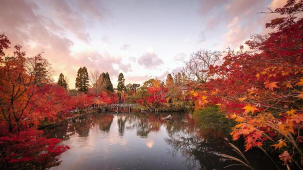
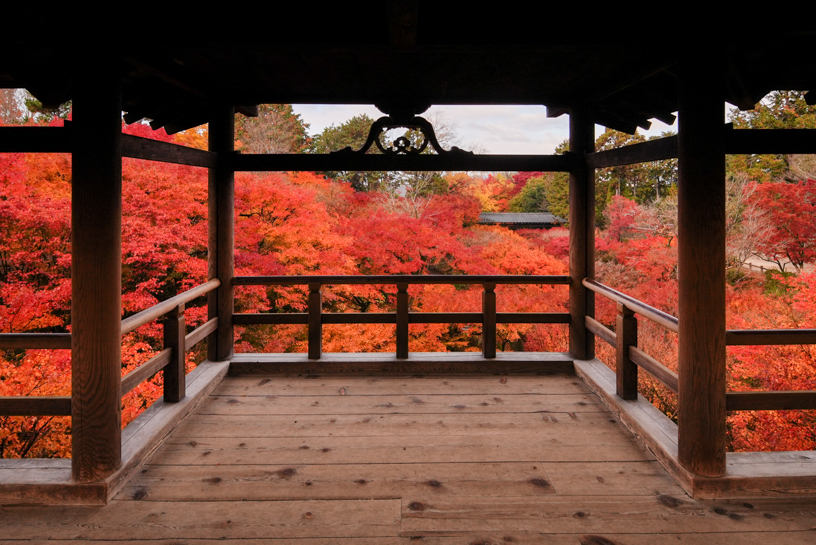

秋の魅力
秋の京都は、一年で最も多くの観光客が訪れる季節です。 寺院や神社、庭園が赤や黄色に染まり、 古都ならではの美しい景色が広がります。
朝日に照らされた紅葉、 夕暮れに染まる寺院、 幻想的なライトアップ。 どの時間帯にも異なる魅力があり、 何度訪れても新しい発見があります。
おすすめスポット3選

永観堂
「もみじの永観堂」と呼ばれる 京都屈指の紅葉名所。 境内全体が鮮やかな赤色に包まれます。

東福寺
通天橋から見下ろす紅葉の海は圧巻。 京都の秋を代表する絶景です。
嵐山
渡月橋と紅葉が織りなす景色は格別。 ゆったり散策するのにおすすめです。
おすすめ写真スポット
東福寺の通天橋はもちろん、 嵐山の渡月橋周辺や永観堂の池周辺も人気の撮影スポットです。
朝早い時間帯なら人も少なく、 美しい紅葉をゆっくり撮影できます。
秋の京都グルメ
栗きんとん
秋の味覚を楽しめる上品な和菓子。 お土産にも人気です。
京風おでん
少し肌寒くなる季節にぴったり。 出汁の旨みが身体に染み渡ります。
抹茶スイーツ
紅葉を眺めながら味わう 京都定番の贅沢なひととき。
秋の京都モデルコース
9:00 東福寺で紅葉鑑賞
11:00 三十三間堂見学
12:30 京料理ランチ
14:00 永観堂散策
16:00 南禅寺参拝
18:00 紅葉ライトアップ鑑賞
赤く染まる木々の下を歩くたび、
京都の秋は特別だと感じる。
きっとあなたも、 思わず「あっ」と声を漏らしてしまう。
← トップページへ戻る
きっとあなたも、 思わず「あっ」と声を漏らしてしまう。